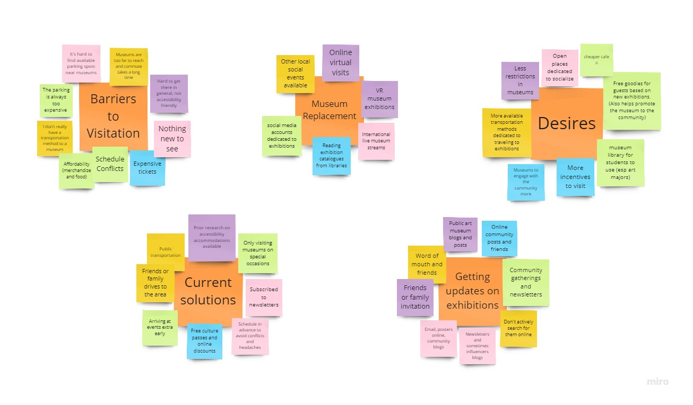
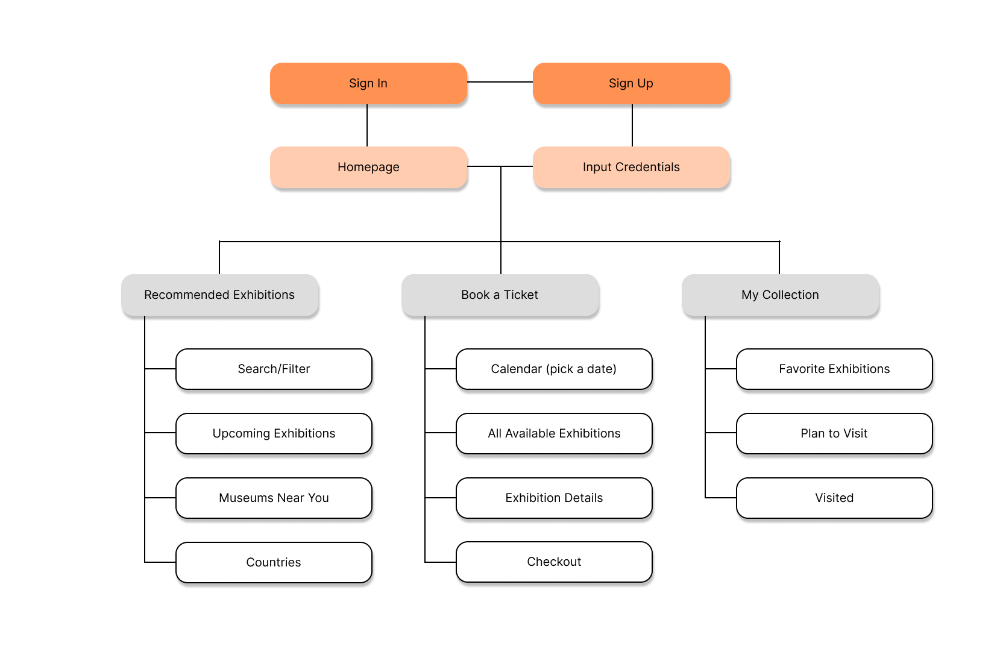
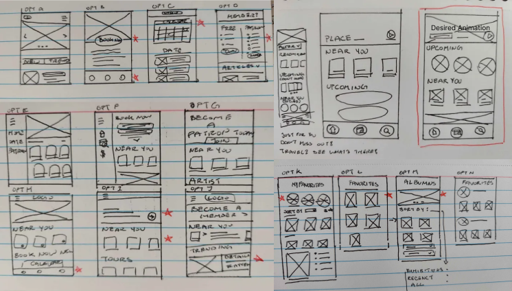
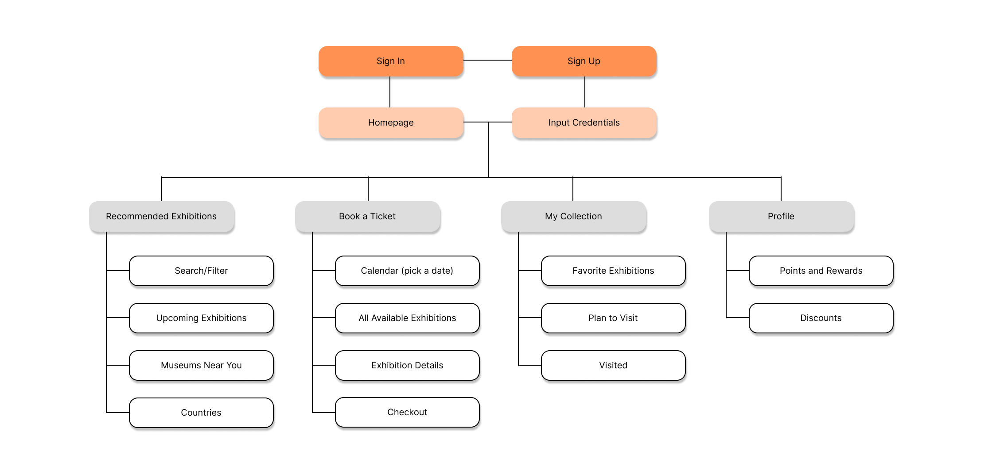

UX Designer
ToolFigma, Miro
DurationJuly 2024 to August 2024 - 3 Weeks
The Goal
Design for Good - Empowering communities and inspiring debate by supplying users with visually compelling and thought-provoking exhibitions that will contribute to the making of a more culturally enriched society.

Secondary Research
Through my secondary research I focused on whether or not my product would be useful and if there was any demand for it. I found that on average, a person attends cultural organizations such as an art museum once every 27 months. Turns out, there are many barriers and challenges that come with a museum visitation. For instance in a survey conducted by colleen the biggest barrier stopping people from visiting cultural organizations is that there is “nothing new to do or see”.
Primary Research
After conducting my secondary research, I moved on to create a Research Plan to outline possible stakeholders, define the research questions I’m trying to answer, and identify KPIs to track the efficiency of the product. Here, I also indicated the representative sample and ideal participant characteristics that I am looking for in my screener survey.
Screener Surveys
When developing the screener survey, I was searching for participants who were interested in social and cultural values and who have an interest in public art museums and is willing to find ways to stay active in these cultural organizations. The survey received 20 responses and I’ve narrowed down five participants of various races, genders, and ages to be interviewed.
Interviews
I interviewed five participants remotely and during these interviews I focused on how their mindset operated when considering a visit to a public art museum. I received a bountiful supply of critical feedback, especially the abundant of mental and physical constraints associated with visiting public art museums. From familial responsibility restrictions to inaccessible travel barriers, there are many factors that play into their decisions.
"What I enjoy most about public art museums is that it's a place for everyone to come together to admire historical and contemporary artworks. However, I just wish there was an online service that will alert me whenever a new museum exhibit or concert is in my area." - participant 2
"Usually, I have to manually research to see if there are any upcoming exhibitons or lectures in museums, and although I did sign up for most of their newsletters, it just gets so lost in my emails. It would be nice to have an alternative time-efficient solution." - participant 3
Key Takeaways
1. Loss of interest after having gone to the same museum a couple of times, people often seek other newer attractions to visit.
2. High travel expenses and time in commuting to a museum with available parking spots and affordable tickets.
3. Conflicting schedules with exhibitions events, many full time students and employees have to take the day off to attend museum’s events and this quickly disheartens them from visiting at all.
Synthesis
After collecting my research, I grouped the information in order to reveal the similar thought processes that came up and shared pain points that the users expressed.
Affinity Mapping
Using Miro, I created an affinity map to group my interview notes into similar categories. The Affinity Map allowed me to visually organize and interpret the key findings of my interview regarding the Museum visitations. At the end, this study revealed the lack of engagement museums take to connect with the community. In light of this, I had a substantial enough initiative to proceed with hypothesizing potential solutions.
Empathy Maps
From there, I created two aggregated empathy maps that focused on what similar users’ say, feel, do, and think. This allowed me to empathize more with the potential users and gain clearer insights of their specific needs. The two types of users I identified were: Social activist with a full time occupation and active tourist and blogger.
Personas
Based off the collected data I have synthesized them into two personas.
How Might We's
By translating user pain points into opportunities for design through well defined questions, I found it easier to create a wider variety of design solutions.
Rapid Sketching
To further brainstorming solutions, I ideated in a more visual way.
Sitemap
The sitemap I created structured and categorized the main pages and features that will be available to the user. I wanted the process to be as simple as possible and naturally guide the user to reach their destination with ease. Thus, adding to their user experience and keeping them on their happy path.
User Flows
I created three user flows that features the main functionality that the app would provide the user with.
Paper Wireframes
When ideating designs through paper wireframes I prioritized quantity over quality.
Wireframes and Low-Fidelity Prototype
Mainly going off of my paper wireframes I made some adjustments and refinements to it's digital equivalent.
Usability Study - Round 1 Findings
Using the acquired data I’ve gather from the usability studies I consolidated them into actionable insights and prioritized the most urgent ones that prevented the user form completing the main user flow:
Style Guide
After conducting usability studies and iterating on my digital wireframes, I started thinking more about the typeface, color,
and components I will be needing for mockups. Thus, I created a style guide to help my design process become more intuitive and efficient.
The style guide I cultivated for the app reflected this with the inclusion of complementary mix of serif and san serif typeface and rounded/stylistic form.
Mockups and High-Fidelity Prototype
With these insights I was ready to start thinking about the visual details. I created a mood board keeping to a neutral brown and beige. I wanted the app to exude a regal look with a touch of modern to entice users to actively visit museums.
Usability Study - Round 2 Findings
I synthesized newly collected data into actionable insights:
IA Revisions
In light of my new findings I went back to revise my sitemap and added a user flow to reflect the new revisions.

The final product of this project is a clickable high-fidelity prototype hosted through Figma's prototype feature.
Demo clickable prototype here.
Looking back, it was certainly difficult to improve or enhance the features and design with limited participants.
Thus moving forward, I aim to connect with an active UX community to participate and receive usability studies and feedback to improve upon my designs.
Furthermore, I realized that although I did some foundational research at the beginning of the project, after the first iterations of the designs I fell into many
roadblocks on ways to approach the issues that my insights revealed to me.
In future projects, I will make it my priority to thoroughly research throughout the design development life cycle to further understand user pain
points.